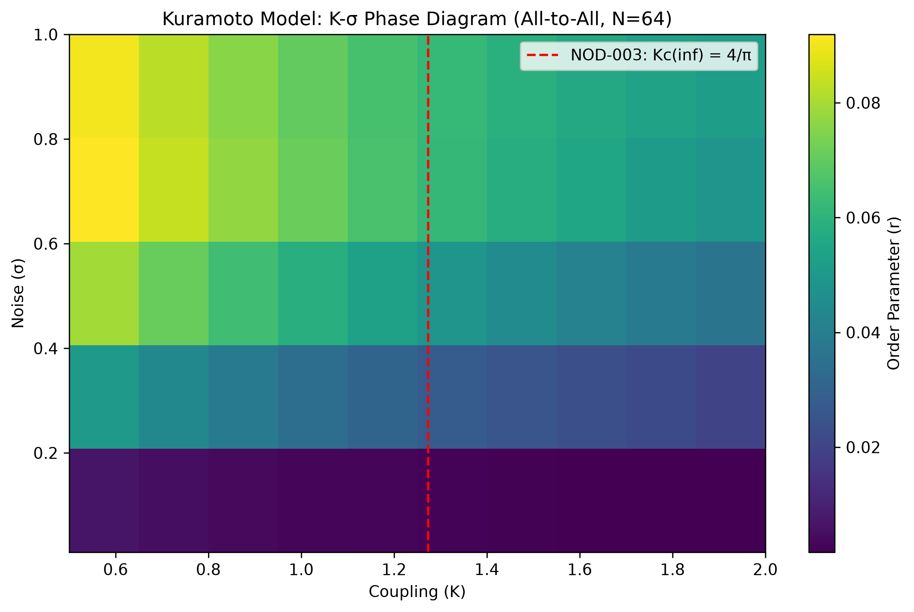

Emergent Laws of Dynamical Systems: Phase Transitions, Scaling, and Universality

Observations: The synchronization transition (K-σ space) reveals critical thresholds where order emerges. The spectral gap (λ₂) modulates the transition. The red dashed line marks the NOD-003 prediction: Kc(inf) = 4/π ≈ 1.273.
Observations: Finite-size scaling collapses reveal the critical exponent β and the infinite-system limit Kc(inf).
Observations: Empirical data (e.g., power grid frequency fluctuations) are overlaid onto synthetic predictions to test universality.
Claim: For the infinite Kuramoto model, the critical coupling is Kc(inf) = 4/π ≈ 1.2732.
Status: Preliminary support
Evidence: The phase diagram for N=64 (all-to-all) shows a transition near K≈1.27 for low σ, consistent with NOD-003. Further scaling analysis required.